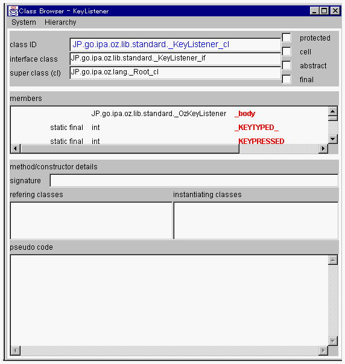

| |

| class ID 表示エリア | ブラウズされているクラスのクラス識別子を表示します。 | ||||||||||||||||||
| interface class 表示エリア | ブラウズされているクラスのインタフェース部識別子を表示します。 | ||||||||||||||||||
| super classes(cl) 表示エリア | 上位実装クラスが存在すれば、そのクラス識別子を表示します。 | ||||||||||||||||||
| protected チェックボックス | ブラウズされているクラスのアクセスレベルが protected であると、ここにチェックが付けられます。 | ||||||||||||||||||
| cell チェックボックス | ブラウズされているクラスがcell型であると、ここにチェックが付けられます。 | ||||||||||||||||||
| abstract チェックボックス | ブラウズされているクラスが abstract メソッドを持つクラスであると、ここにチェックが付けられます。 | ||||||||||||||||||
| final チェックボックス | ブラウズされているクラスが final 修飾子を持つクラスであると、ここにチェックが付けられます。 | ||||||||||||||||||
| members リスト | クラスのメンバを表示しています。 メンバのタイプは色で区別されています。
細字のメンバは上位実装クラスで宣言されているメンバです。 アトリビュートメンバについて、
コンストラクタメンバについて、
メソッドメンバについて、
| ||||||||||||||||||
| method/constructor details | members リストで選択されたメンバがこのクラスで定義されたメソッドあるいはコンストラクタである場合、以下のような詳細情報を表示します。
|
| |